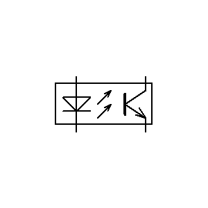
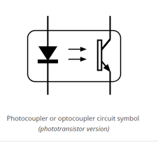
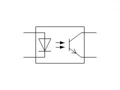
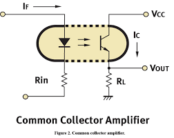

This is a short ‘ible on how to make an Optocoupler.
There’s a whole bunch of names that this little electric component comes under.
Others include vactrol, Opto-isolator, photocoupler and optical isolator.
An optocoupler allows you to transmit an electrical signal between two isolated circuits with two parts: an LED that emits infrared light and a photosensitive device (LDR) which detects light from the LED.
Both the LED and the LDR are enclosed so no light can reach the LDR.
The shop brought ones will be enclosed in plastic.
This homemade version uses a small piece of heat shrink.
So what is an optocoupler and why do you need to know how to make one.
If you build circuits then at some stage you will come across a weird schematic symbol that is a optocoupler.
An optocoupler can be used in many applications such as synths and sound effect circuits, input/output switching, and a bunch of other applications.
Here's a couple of links for those who want to learn more about optocouplers
More Technical Link 3






Below are some of the more common optocoupler schematic symbols you might come across. You can see that the symbol is made up of an LED and photoresistor symbol.
Actually, the symbol depicts what an optocoupler is quite well. I did find it a little confusing however when I first come across one as I didn’t realize they were connected parts
I have also added a couple of schematics that show you an optocoupler being used


Parts List
Tools:


The images in this step shows how the components go together. You can see that the LED and the LDR face each other inside the heat shrink. The LED acts as an input and the LDR is the output receiver.


Steps:


Steps:


Steps:
That's it. You have now made your own optocoupler which will work just as good as any store brought one.